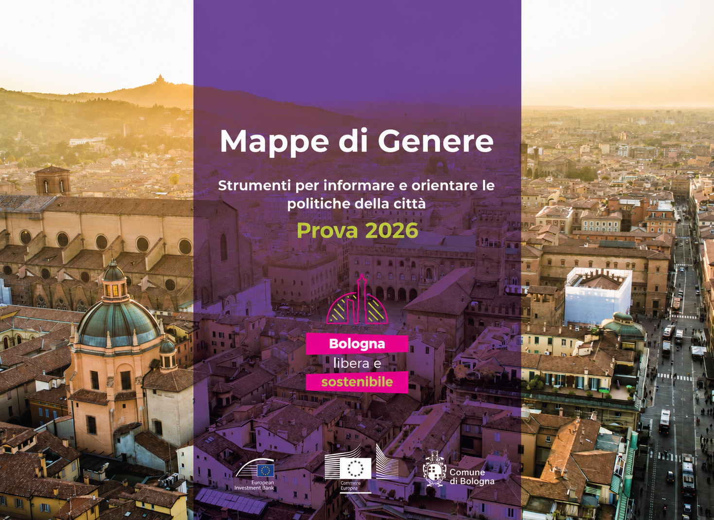
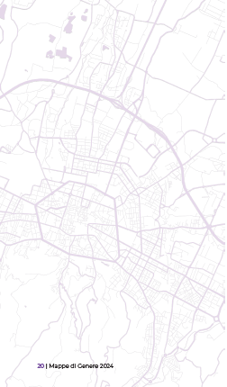
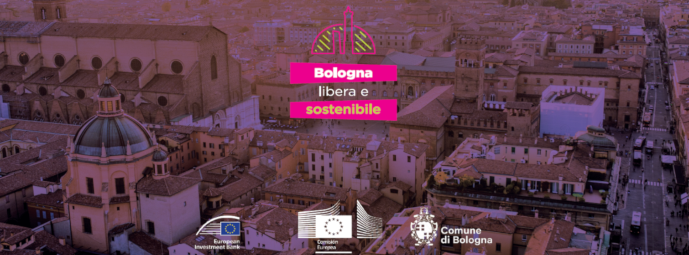

AVVISO LEGALE
Mappe di Genere: Strumenti per informare e orientare le politiche della città 2024
Progetto "GENDER GAP REDUCTION IN URBAN PROJECTS IN BOLOGNA (ITALY)"
Per i dettagli della realizzazione della prima edizione del documento e per gli aspetti legali e gli approfondimenti vai al link
Autori edizione 2024
Area Programmazione, Statistica e Presidio Sistemi di Controllo interni, Comune di Bologna
Capo Area: Mariagrazia Bonzagni
Dirigente dell'U.I. Ufficio Comunale di Statistica: Silvia Marreddu
Redazione: Paola Ventura, Fabrizio Dell'Atti
Aggiornamento grafico: Cristina Cacco
Si ringrazia per la collaborazione
Pablo Martínez — Esperto internazionale di Business Intelligence, Assistenza tecnica
Presentazione
Questo importante progetto nasce dalla collaborazione tra il Comune di Bologna e la BEI (Banca Europea per gli investimenti) nell’ambito di un progetto più ampio che ha l’obiettivo di supportare il Comune nella progettazione e realizzazione di infrastrutture urbane e, in generale, di edifici e spazi pubblici accessibili alle donne e agli uomini e a tutte le persone che abitano la città ed è l’esito di un complesso percorso formativo e trasversale all’interno dell’Amministrazione.
Il progetto ha contribuito, da un lato, a sensibilizzare ed accrescere la cultura interna su temi che difficilmente entrano nell’agenda formativa del personale e, dall’altro, attraverso la costituzione di un gruppo di lavoro trasversale, ha messo al centro la questione dei dati e la necessità di disporre di informazioni e conoscenza per poter decidere e progettare.
Dalla puntuale attività di analisi per rilevare, nell’ambito delle varie strutture organizzative dell’amministrazione, le criticità relative ai dati, alla loro disponibilità, modalità di raccolta e capacità di integrazione è sorta l’esigenza e l’opportunità di costruire un vero e proprio Atlante, per dare evidenza visiva e, quindi, supportare la programmazione e la progettazione di infrastrutture e servizi accessibili a tutte e a tutti laddove richiesti e necessari.
L’obiettivo generale del progetto è funzionale a supportare l’Ente nell’attuazione di progetti che possam ridurre il divario di genere esistente e contribuire al gender empowerment creando infrastrutture e servizi accessibili a tutte e tutti.
La mappatura si colloca all’interno di un processo di pianificazione dinamica e fedele alle peculiarità del territorio e della collettività di cui è espressione.
Tuttavia quello che le mappe istituzionali non sempre riescono a restituirci sono i fili visibili e invisibili o le relazioni fra persone ed enti; è questo lo scopo del progetto, finanziato dalla Regione Emilia Romagna, dal titolo “Verso un Atlante di genere a Bologna”. Prospettive femministe per costruire città sicure”; quest’ultimo, in fase di avvio, integrerà questo Documento e rappresenterà la sua prima evoluzione. Sarà teso a rilevare mappature di comunità, aspetti materiali ed immateriali che alimentano i nostri territori e interazioni attraverso il coinvolgimento di terzo settore, delle scuole e della comunità cittadina. mappe create dal basso, che potranno fornire opportunità di incontro durante la loro stessa elaborazione.
L’idea di costruire insieme, come collettività, una rappresentazione cartografica dei luoghi che condividiamo e che contribuiamo a plasmare con le nostre azioni, interazioni e progetti, è al tempo stesso innovativa e antica e non priva di fascino.
Il percorso partecipativo in essere, per realizzare il progetto finanziato dalla Regione, farà emergere esigenze, aspettative e potenzialità che riguardano luoghi e persone; l’obiettivo finale è quello di avere uno strumento per la realizzazione di nuove progettazioni, che assuma un potenziale educativo, di empowerment e di inclusione sociale che si presenta assolutamente in linea con quanto previsto dalla Strategia Nazionale di Sviluppo Sostenibile, potendosi considerare a tutti gli effetti un documento di natura programmatica e programmatoria. In esso trova applicazione l’SDG 5 che intende garantire al genere femminile la parità nell’accesso all’educazione e alle cure mediche, in ambito lavorativo e all’interno degli organi decisionali politici ed economici.
A tali considerazioni occorre aggiungere che la debolezza dei sistemi di monitoraggio e valutazione che, purtroppo, troppo spesso, contraddistingue le politiche di welfare del nostro ordinamento giuridico, trova, nello strumento Atlante di genere, un valido supporto. Su questo ci rafforza anche il gruppo Grevio (gruppo di esperti indipendenti, con sede presso il Consiglio d’Europa, sulla lotta contro la violenza nei confronti delle donne e la violenza domestica attraverso il monitoraggio delle disposizioni contenute nella Convenzione di Istanbul) che, nell’ultimo Rapporto di valutazione (anno 2020), ha esortato vivamente le autorità italiane a favorire l’accesso delle vittime a servizi di assistenza generali adeguati, come i servizi sanitari, di alloggio, all’occupazione, di pubblica istruzione e formazione e a garantire che tali servizi siano uniformemente distribuiti in tutto il Paese e dispongano delle risorse necessarie e di personale formato sulle dinamiche di genere della violenza contro le donne.
Pertanto se “il viaggio é importante quanto la destinazione”, l’Atlante sarà funzionale non solo a fare emergere la rappresentazione di luoghi e spazi, ma anche a permettere alle comunità locali e, in particular, alle sue componenti più vulnerabili di poter ambire a contesti educativamente attrezzati, socialmente ricchi e urbanisticamente vivibili.
La Vicesindaca Emily Marion Clancy

0 Introduzione
Introduzione
Questo lavoro è il frutto della collaborazione tra il Comune di Bologna e la BEI (Banca Europea per gli Investimenti) a conclusione di un intenso processo realizzato tra il 2022 e il 2023 nell’ambito del progetto “Gender gap reduction in urban projects in Bologna” finanziato dalla BEI e implementato dal Consorzio formato da OCA Global, Istituto per la Ricerca Sociale, e Fondazione Giacomo Brodolini, con l’obiettivo di definire linee guida che favoriscano un più efficace processo decisionale nelle amministrazioni, finalizzato ad una società più egualitaria ed inclusiva, al fine di guidarla verso un maggior sviluppo sostenibile.
Il documento principale sono “Linee guida per progetti inclusivi dal punto di vista di genere”, un manuale che fornisce informazioni dettagliate sul modo in cui gli interventi urbani possono influire sugli effetti di uguaglianza attraverso una corretta pianificazione, contribuendo in modo accurato a prendere decisioni concrete riguardo agli interventi nell’ambiente urbano.
Al tempo stesso, l’assistenza fornita al Comune durante questo periodo, ha permesso di rendere disponibile una notevole quantità di informazioni in grado di descrivere il territorio urbano adottando una prospettiva di genere. Nell’arco di un anno, tale processo, con il supporto tecnico della BEI, ha portato all’identificazione e all’analisi di nuove fonti di dati che hanno arricchito il patrimonio di informazioni del Comune.
Il seguente documento, che integra questi dati, è quindi nato in modo naturale e mira a riunire queste informazioni con l’obiettivo di renderle disponibili ai cittadini e alle cittadine, costruire una narrazione con uno sguardo di genere al contesto urbano e di migliorare i processi di pianificazione. I dati e le cartografie di questo Atlante vogliono essere un supporto per le decisioni di progettazione e costruzione di nuove infrastrutture e servizi, consentendoci di guardare Bologna nella totalità e complessità del suo territorio, suggerendo dove è necessario intervenire, perché si manifestano criticità e dove è necessario dare priorità agli interventi urbani.
Questo lavoro è un vero e proprio Atlante, uno strumento cartografico che si limita ad una rappresentazione e non ha l’obiettivo di offrire soluzioni alle criticità rappresentate.
Un Atlante in continua evoluzione
Il processo di elaborazione di questo Atlante è dinamico e articolato, è un percorso in continua evoluzione perché il Comune genera costantemente nuove informazioni e, al contempo, emergono nuovi problemi da affrontare che stimolano a cercare ancora più dati che li descrivano.
Un Atlante aspira a riunire tutte le conoscenze di un territorio. Il presente documento parte dal presupposto che la complessità del tema è costantemente in divenire e, pertanto, questa è la prima versione di un documento cui seguiranno versioni successive con nuovi dati e prospettive sulle informazioni in grado di descrivere il divario di genere nella città per raggiungere l’obiettivo di agire per contrastarlo e ridurlo, fino alla parità.
Un libro fatto di dati
In un contesto in cui le informazioni circolano attraverso supporti digitali e i dati sono elaborati attraverso avanzate tecnologie informatiche, il Comune di Bologna e la BEI hanno deciso di produrre questo Atlante anche nel formato classico di libro, pur fatto di dati, un unico volume che racchiude il lavoro svolto, da stampare, sfogliare e tenere sulla scrivania. Tale scelta è stata fondamentale per definire gli obiettivi del processo e per delimitare con precisione dove concentrare gli sforzi in questa prima edizione del documento.
Il libro limita la quantità di informazioni da inserire in ogni pagina, porta a condensare i dati e a selezionare ciò che è essenziale illustrare. Inoltre, il libro è vincolato al limite della scala territoriale di rappresentazione: mentre una mappa digitale può essere ingrandita fino a coincidere con la stessa realtà che rappresenta, l’impaginazione cartacea in cui Bologna è presentata con una scala fissa (1:65000) costringe a decidere su un insieme limitato di risorse grafiche valide per questa scala.
Infine, il libro attribuisce una struttura lineare all’Atlante, che può essere consultato a piacere ma che propone al tempo stesso un ordine e una struttura, indispensabili per descrivere la città e per comprendere ciò che viene raccontato su di essa.
L’Atlante inizia spiegando chi sono, quanti sono e che caratteristiche hanno gli abitanti di Bologna, qual è il loro genere e come è associato alla fragilità, ai bisogni, ai comportamenti.
Successivamente, ci dedichiamo a illustrare le diverse risorse urbane, ovvero quei servizi che la città fornisce agli abitanti per colmare le disuguaglianze, offrire sostegno, lavorare per la prosperità e l’integrazione sociale. Questa parte è divisa in due capitoli: da un lato parliamo delle strutture e di quelli che possiamo chiamare spazi chiusi, dall’altro degli spazi aperti (legati allo spazio pubblico, ai parchi o ai giardini) che, pur condividendo gli stessi obiettivi, è più semplice trattare separatamente a causa della loro disparità tipologica.
Segue una panoramica sulla mobilità degli abitanti, sui flussi che collegano gli spazi e i servizi offerti dalla città, che consentono di comprendere più a fondo come il genere caratterizzi l’uso di tali spazi.
Per concludere, mostriamo come il Comune sta lavorando alla trasformazione dell’ambiente in ognuno dei temi trattati, attraverso una mappa delle trasformazioni in corso, grazie a importanti investimenti.
Le mappe e i temi affrontati sono talvolta più vicini alla nozione di “corpo”, ovvero a ciò che è direttamente relazionato alla sessualità, identificati con la lettera C. Altre mappe e temi affrontati sono più vicini alle idee di “ruolo” di genere, ai comportamenti e alle azioni legate alla cura che sono stati identificati con la lettera R. In alcuni casi entrambi i concetti espressi definiscono la mappatura in questione e quindi la lettera C e la lettera R sono utilizzate nella definizione della mappa.
I dati
Tutti i dati utilizzati in questo documento sono preziosi; sono stati elaborati principalmente da servizi comunali e sono parte di un processo in cui sono stati raccolti o prodotti, validati e pubblicati, trasformandoli in un patrimonio informativo funzionale a contribuire al benessere della popolazione del nostro territorio.
Alcuni indicatori sono stati realizzati con l’Assistenza Tecnica (AT) della BEI. Ad esempio nell’indagine sulla qualità della vita che il Comune realizza ogni anno, l’AT della BEI ha suggerito l’introduzione o modifiche di alcune domande e ha elaborato degli indici compositi, che consentono di identificare e misurare in modo sintetico il divario di genere, l’impiego del tempo per il lavoro di cura e la percezione delle emozioni degli abitanti della città secondo il genere.[1]
Durante questo percorso di assistenza tecnica da parte della BEI, l’Ufficio di Statistica nell’ambito dell’Area Programmazione e Statistica ha definito un nuovo indicatore di fragilità individuale e di divario di genere [2], che risulta essere più aggiornato e completo rispetto alla precedente versione grazie all’integrazione di nuove fonti di dati come quelli ottenuti dall’INPS (Istituto Nazionale della Previdenza Sociale) che hanno permesso di misurare in modo più preciso i redditi di bassa soglia del lavoro secondo il genere.
I dati del Dipartimento di Welfare e Promozione del benessere di comunità [3] sono stati analizzati con il supporto della BEI con l’obiettivo di elaborare per la prima volta alcuni indici che ci permettono di individuare i diversi bisogni degli abitanti del Comune di Bologna e ci aiutano a comprendere piú accuratamente come vengono erogati i diversi servizi di welfare nella città.
Inoltre, i nuovi dati del MMS (Mobility Management System)[4] sono stati utilizzati per la prima volta per descrivere la mobilità del lavoro a livello di dettaglio sub-comunale. Tali dati ci hanno permesso di visualizzare il comportamento di mobilità secondo il genere diventando uno strumento che permetterà all’Ufficio di Statistica, oltre che, ovviamente, al Settore Mobilità sostenibile, di ottenere nuove preziose informazioni.
Uno strumento a supporto delle “Linee guida per progetti inclusivi dal punto di vista di genere”
I dati raccolti e in costante aggiornamento contenuti in questo libro di dati si possono considerare sia il quadro conoscitivo che lo strumento di monitoraggio per l’applicazione delle “Linee guida per progetti inclusivi dal punto di vista di genere”, quale manuale operativo a sostegno di una progettazione inclusiva che contribuisce ad indirizzare le scelte progettuali per gli interventi all’interno del territorio urbano.
Le Linee guida sono uno strumento di supporto ai settori tecnici dell’Amministrazione, anche nel caso di processi partecipativi con i cittadini, con l’obiettivo di integrare la prospettiva di genere nella progettazione urbana.
All’interno delle “Linee guida per progetti inclusivi dal punto di vista di genere” viene individuato il principale ambito di intervento “Sviluppo e la rigenerazione urbana” che si suddivide in tre sottoambiti di progettazione:
- Spazio pubblico: strade, parchi e piazze
- Mobilità sostenibile: la rete ciclabile
- Edifici scolastici
Per ogni ambito viene proposta una check list, sotto forma di quesiti specifici, a cui ogni progetto deve dare risposta. I quesiti sono raggruppati nei quattro gruppi di indicatori per la qualità urbana con prospettiva di genere:
- Diversità
- Prossimità
- Sicurezza-Comfort
- Autonomia e Accessibilità
La base cartografica di riferimento
Ogni mappa raccoglie dati da diverse fonti. Alcune mostrano una sola informazione, altre mostrano molteplici dati sovrapposti relativamente al tema a cui si riferisce la mappa. Tali dati si mostrano con distinte risoluzioni o dettaglio. In alcuni casi l’informazione si mostra a livello di quartiere, altre volte a livello di zona (area statistica minore utilizzata per numerose analisi dall’Ufficio di Statistica) oppure a livello di punto, dove è possibile mostrare precisamente la localizzazione esatta di una struttura o infrastruttura.
Tutte le mappe sono costruite su una base cartografica che mostra la rete stradale, i limiti amministrativi ed i grandi parchi di cui dispone la città, i quali abitualmente sono considerati zone della città di riferimento per gli abitanti.
Di seguito è possibile visualizzare la base della mappa utilizzata a cui si sovrarranno il resto delle informazioni.
Come si legge e come si usa
Ognuno dei cinque capitoli è suddiviso in paragrafi dove è possibile trovare le diverse rappresentazioni cartografiche, corredate di fonti e legenda e, per ogni mappa, è riportato anche il link (in formato qr code e indirizzo web completo), in modo da poterle scaricare e riutilizzare in analisi successive. Inoltre, le domande in forma di check list contenute nel documento “Linee guida per progetti inclusivi dal punto di vista di genere” sono state riproposte e incorporate in ciascuna delle mappe, in modo che i due documenti rimangano costantemente collegati.
Come è stato enunciato in precedenza, questo lavoro sviluppa un processo in cui vengono raccolte le informazioni più rilevanti e vengono aggiunte nuove informazioni al fine di costruire un’unica narrazione che ha lo scopo di offrire, attraverso le mappe, una rappresentazione efficace del territorio urbano in grado di supportare decisioni mirate, anche grazie all’orientamento offerto dalle” “Linee guida per progetti inclusivi dal punto di vista di genere”.
Ci auguriamo che questo libro sia di supporto al processo decisionale della città, che possa essere una risorsa per gli abitanti, una lettura sistematica dei servizi offerti in grado di evidenziare anche le molte opportunità e le eventuali carenze. Presentando informazioni chiare ed affidabili, speriamo di facilitare la realizzazione di azioni che portino alla riduzione delle disuguaglianze di genere, avvicinandoci così ad una società più equa.
[1]Analisi benessere e qualità della vita
[2] La fragilita individuale e la disparità di genere
-
Le persone
Questo primo capitolo presenta una descrizione degli abitanti di Bologna. Si concentra sulle segmentazioni demografiche relative sia all’età che al sesso delle persone che evidenziano le popolazioni più vulnerabili, su coloro che richiedono assistenza e su coloro che tradizionalmente la forniscono.

Abitanti
La città di Bologna è la settima città d’Italia per popolazione con quasi 400.000 abitanti ed una crescita annuale costante nel tempo.
Le seguenti mappe mostrano la distribuzione della popolazione residente, segmentata per sesso ed età sull’intero territorio del Comune di Bologna.
Le mappe evidenziano la popolazione giovanile (fascia d’età 0-14 anni), la popolazione in età avanzata (fascia d’età > 65 anni) e la popolazione anziana (fascia d’età > 75 anni) in quanto necessitano di maggiore sostegno ed assistenza.


La densità della popolazione residente
La seguente mappa mostra la densità di popolazione residente in ognuna delle aree statistiche della città, ovvero il numero di abitanti per ogni ettaro della città.
La suddivisione del territorio comunale in 90 aree statistiche risponde all’esigenza di definire una “griglia” di lettura più fine rispetto alla tradizionale suddivisione di Bologna in quartieri o zone e nello stesso tempo sufficientemente sintetica rispetto alla articolazione molto parcellizzata in sezioni censimento. Inoltre le aree statistiche sono la base territoriale usata per le analisi statistiche del Comune di Bologna e i suoi quartieri.
I dati rappresentati provengono dall’anagrafe della città di Bologna.
Popolazione totale residente
fonte: Popolazione residente per quartiere, zona e area statistica al 31 dicembre 2023 - I numeri di Bologna


La densità della popolazione femminile giovanile
La popolazione femminile compresa tra 0 e 14 anni rappresenta il 10,4% del totale della popolazione femminile complessiva nella città ed il 5,5% rispetto al totale della popolazione.
La seguente mappa mostra la densità di popolazione femminile residente compresa nella fascia d’età tra 0 e 14 anni in ognuna delle aree statistiche della città.
I dati rappresentati provengono dall’anagrafe della città di Bologna.
Popolazione femminile residente 0-14 anni
fonte: Popolazione residente per età, sesso, cittadinanza, quartiere, zona, area statistica - serie storica Open Data


La densità della popolazione femminile di età avanzata
La popolazione femminile maggiore di 65 anni rappresenta il 27,5% rispetto al totale delle femmine della città ed il 14,4% rispetto alla popolazione totale.
La seguente mappa mostra la densità di popolazione femminile residente maggiore di 65 anni in ognuna delle aree statistiche della città.
I dati rappresentati provengono dall’anagrafe della città di Bologna.
Popolazione femminile residente > 65 anni
fonte: Popolazione residente per età, sesso, cittadinanza, quartiere, zona, area statistica - serie storica Open Data


La densità della popolazione femminile anziana
La popolazione femminile maggiore di 75 anni rappresenta il 16,4% rispetto alla popolazione totale femminile e l’ 8,6% rispetto al totale della popolazione.
La seguente mappa mostra la densità di popolazione femminile maggiore di 75 anni residente in ognuna delle aree statistiche della città.
I dati rappresentati provengono dall’anagrafe della città di Bologna.
Popolazione femminile residente > 75 anni
fonte: Popolazione residente per età, sesso, cittadinanza, quartiere, zona, area statistica - serie storica Open Data


Il bilancio della popolazione tra maschi e femmine
Come abbiamo visto nelle mappe precedenti la popolazione femminile non è proporzionale a quella maschile secondo fasce d’età, inoltre non è diffusa omogeneamente su tutto il territorio, essendo per lo più concentrata in alcune aree della città.
La seguente mappa mostra il bilanciamento fra maschi e femmine, ovvero la differente concentrazione di maschi e femmine rispetto al totale della popolazione residente in ogni area statistica.
I dati rappresentati provengono dall’anagrafe della città di Bologna.
Rapporto popolazione residente maschi e femmine
fonte: Popolazione residente per età, sesso, cittadinanza, quartiere, zona, area statistica - serie storica Open Data


Spazi dell'abitare
Approssimativamente il 50% della superficie costruita nella città è destinata all’alloggio degli abitanti. Il seguente capitolo mostra dove sono situate le aree residenziali e le relative caratteristiche di qualità edilizia. L’intento è quello di mettere in relazione le precedenti segmentazioni demografiche con le disuguaglianze che presenta il tessuto urbano.
Le caratteristiche delle abitazioni in cui risiede la popolazione possono contribuire ad accentuare la vulnerabilità, incrementare la dipendenza e la necessità di assistenza. Tali caratteristiche, come la qualità della casa o le sue dimensioni cambiano lentamente nel tempo di pari passo con il processo di rinnovamento dei tessuti urbani, costituendo così un elemento che condiziona inevitabilmente nel tempo la vita degli abitanti.

Gli ambiti con uso residenziale
Il Comune di Bologna si estende per circa 14.000 ettari, tra i quali circa il 20% è occupato da edificazioni residenziali che accolgono la popolazione.
La seguente mappa mostra gli ambiti occupati da edifici ad uso prevalentemente residenziale insieme alle superfici edificate destinate ad usi prevalentemente produttivi necessari per la città.
Aree ad uso prevalentemente residenziale/produttivo
fonte : 2020 - Coperture vettoriali uso del suolo di dettaglio - Edizione 2023


Le aree con bassa qualità edilizia
Il parco residenziale presenta diverse qualità costruttive che definiscono le condizioni di abitabilità degli immobili.
La seguente mappa mostra l’indicatore BQE (Indicatore composito di Bassa Qualità Edilizia) che stima una potenziale condizione di fragilità residenziale.
L’indicatore che viene mostrato è stato calcolato a partire dai dati catastali dei valori immobiliari e dalla descrizione dei nuclei familiari.
Indicatore BQE ( Bassa Qualità Edilizia )
fonte : La fragilità demografica, sociale ed economica nelle aree statistiche del comune di Bologna_2023


La percentuale di nuclei con spazio abitativo insufficiente
Il parco residenziale presenta una dimensione variabile che talvolta non è sufficiente per ospitare i gruppi di persone che vi risiedono, generando condizioni di sovraffollamento.
La seguente mappa mostra la stima di nuclei con spazio abitativo insufficiente che descrive situazioni di potenziale vulnerabilità residenziale.
L’indicatore che viene mostrato è stato calcolato a partire dai dati catastali e dalla descrizione dei nuclei familiari.
La percentuale di nuclei con spazio abitativo insufficiente
fonte: La fragilità demografica, sociale ed economica nelle aree statistiche del comune di Bologna_2023


Fragilità individuale e divario di genere
Alcuni indicatori demografici, sociali ed economici descrivono efficacemente il territorio e la sua popolazione. La sintesi di tali dati in valori numerici sintetici agevola la lettura delle diverse aree della città e delle potenziali vulnerabilità, attraverso mappe tematizzate secondo l’intensità della fragilità espressa negli indici. Rispetto all’analisi annuale della potenziale fragilità del territorio[5] distinta nei tre ambiti demografico, sociale ed economico, abbiamo elaborato delle nuove mappe formulando degli indicatori declinati prettamente sul singolo e non sul nucleo familiare e sulle abitazioni: una derivazione in scala ridotta, ma con la medesima metodologia, che consente di far emergere la potenziale fragilità dell’individuo nel territorio e il divario uomo-donna, evidenziando la maggiore incidenza della vulnerabilità femminile rispetto a quella maschile nelle aree della città che presentano maggior squilibrio tra uomini e donne. Le diverse fragilità mostrano sia la vulnerabilità della popolazione che la sua relativa capacità di adattamento alle avversità esterne. La possibilità di conoscere le diverse potenziali fragilità individuali della popolazione e il loro divario di genere può aiutarci a indirizzare in modo più efficace le azioni e i servizi che dovrebbero arginarla.

|
Fragilità demografica, sociale, economica, globale individuale e divario di genere fonte : La fragilità individuale e la disparità di genere - 2023 |

-
Indice di potenziale fragilità socio-demografica individuale e divario di genere
La seguente mappa mostra l’indice sintetico di potenziale fragilità socio-demografica individuale calcolato dall’Ufficio di Statistica del Comune di Bologna con la collaborazione della BEI,a partire dagli indicatori analitici degli ambiti demografico e sociale, usando dati che descrivono il numero di persone laureate, persone anziane con necessità speciali e la composizione familiare, ecc. I dati utilizzati provengono dall’anagrafe, dal censimento, dall’indicatore di bassa intensità lavorativa, dall’AUSL (Azienda Unità Sanitaria Locale) e dall’INPS(Istituto Nazionale di Previdenza Sociale).
La medesima informazione è stata elaborata con una segmentazione di genere che ci permette di mettere in evidenza dove le donne sono più fragili degli uomini con una visione sociale.
In questo modo possiamo osservare dove si verifica una maggiore fragilità socio-demografica individuale (attraverso il colore assegnato ad ogni area statistica) e al tempo stesso quando la fragilità è caratterizzata da un divario di genere sfavorevole per le donne (indicato con il punto in primo piano).

|
Fragilità demografica, sociale, economica, globale individuale e divario di genere fonte: La fragilità individuale e la disparità di genere - 2023 |

-
Indice di potenziale fragilità economica individuale e divario di genere
La seguente mappa mostra l’indice sintetico di potenziale fragilità economica individuale, calcolato dall’Ufficio di Statistica del Comune di Bologna con la collaborazione della BEI, a partire dagli indicatori analitici del rispettivo ambito. I dati utilizzati provengono dall’INPS (Istituto Nazionale di Previdenza Sociale). e dall’anagrafe, essi descrivono il reddito pro capite mediano e gli abitanti con reddito sotto soglia.
La medesima informazione è stata elaborata con una segmentazione di genere che ci permette di mettere in evidenza dove le donne sono più fragili degli uomini con una visione economica.
In questo modo possiamo osservare dove si verifica una maggiore fragilità economica individuale (attraverso il colore assegnato ad ogni area statistica) e al tempo stesso quando la fragilità è caratterizzata da un divario di genere sfavorevole per le donne (indicato con il punto in primo piano).

|
Fragilità demografica, sociale, economica, globale individuale e divario di genere fonte: La fragilità individuale e la disparità di genere - 2023 |

-
Indice di potenziale fragilità globale individuale e divario di genere
La seguente mappa mostra l’indice di potenziale fragilità individuale delle persone nel territorio, calcolato dall’Ufficio di Statistica del Comune di Bologna con l’AT della BEI, utilizzando un sottogruppo di indicatori della fragilità demografica, sociale ed economica.
La medesima informazione è stata elaborata con una segmentazione di genere che ci permette di mettere in evidenza dove le donne sono più fragili degli uomini.
In questo modo possiamo osservare dove si verifica una maggiore fragilità globale individuale (attraverso il colore assegnato ad ogni area statistica) e al tempo stesso quando la fragilità è caratterizzata da un divario di genere sfavorevole per le donne (indicato con il punto in primo piano).

Bisogni
Di seguito, riportiamo una serie di mappe realizzate a partire dai dati raccolti dal Dipartimento di Welfare e Promozione del Benessere di comunità del Comune di Bologna[9] relativi alle richieste degli abitanti (accesso) ed i servizi che sono stati erogati (autorizzati). In questo modo è possibile mostrare in quali luoghi della città sia percepita una maggiore necessità di intervenire e la tipologia di supporto richiesto, permettendo di affinare la descrizione delle fragilità presentata in precedenza. I seguenti indici mostrano i valori in chiave di genere. Nel caso della prima mappa (1.4.1 L’accesso ai servizi di welfare) l’informazione si presenta segmentata per sesso. Le mappe successive mostrano la relazione tra i bisogni autorizzati alle donne ed i bisogni autorizzati agli uomini. Tutte le mappe mostrano una chiara differenza tra i diversi servizi autorizzati secondo il sesso mettendo in evidenza come i bisogni della popolazione sono caratterizzati da esso.

L’accesso ai servizi di welfare
La seguente mappa mostra un indicatore costruito a partire dai dati raccolti dal Dipartimento di Welfare e Promozione del Benessere di comunità del Comune di Bologna, ossia le richieste fatte attraverso i vari sportelli dedicati nella città. L’indicatore riflette la proporzione (tasso) del numero degli abitanti che hanno fatto almeno un accesso nel 2023 ai diversi sportelli welfare della città.
Accesso ai servizi di welfare
fonte: I bisogni socio assistenziali dei bolognesi - 2023


I bisogni autorizzati di contributi economici
La seguente mappa mostra la differenza di proporzione per genere (femmine in relazione ai maschi) degli abitanti che hanno ottenuto qualche servizio rispetto al totale. Questo indicatore ci permette di osservare come, in base al genere, sono stati distribuiti gli aiuti per le necessità economiche autorizzati dal Comune.
Bisogni autorizzati di contributi economici
fonte: I bisogni socio assistenziali dei bolognesi - 2023


I bisogni autorizzati di segretariato sociale
La seguente mappa mostra la differenza di proporzione per genere (femmine in relazione ai maschi) degli abitanti che hanno ottenuto qualche servizio rispetto al totale. Questo indicatore ci permette di osservare come, in base al genere, sono stati distribuiti gli aiuti per le necessità di segretariato sociale autorizzati dal Comune.
Il segretariato sociale è un’attività di servizio volta a garantire unitarietà di accesso, ascolto, orientamento, accompagnamento, attività di analisi della domanda, collegamento e sviluppo delle collaborazioni anche con altri soggetti, pubblici e privati.
Bisogni autorizzati di segretariato sociale
fonte: I bisogni socio assistenziali dei bolognesi - 2023


I bisogni autorizzati di servizi sociali
La seguente mappa mostra la differenza di proporzione per genere (femmine in relazione ai maschi) degli abitanti che hanno ottenuto qualche servizio rispetto al totale. Questo indicatore ci permette di osservare come, in base al genere, sono stati distribuiti gli aiuti per le necessità di servizi sociali autorizzati dal Comune.
Bisogni autorizzati di servizi sociali
fonte: I bisogni socio assistenziali dei bolognesi - 2023


Cure e autonomia
Grazie all’indagine sulla qualità della vita realizzata nel 2023[14]. In esso descriviamo la diversa percezione della qualità di vita tra uomini e donne con l’intento di dimostrare un pregiudizio di genere nel sostenere le mansioni legate alla cura della famiglia e di persone amiche.Quando si parla di “cura” ci si riferisce all’insieme dei compiti che producono beni e servizi necessari per la rigenerazione quotidiana del benessere fisico ed emotivo delle persone che si producono normalmente in circuiti intimi e nella cornice domestica.In termini generali le donne presentano un maggior carico di cura, una maggiore dipendenza economica nella relazione di coppia ed una maggiore espressione negativa rispetto agli uomini.

Indice del carico di cura
Grazie all’indagine sulla qualità della vita realizzata nel 2023 è stato possibile elaborare un indice che esprime il carico totale dei rispondenti in termini di cura nei confronti di familiari e altre persone a carico, anche non conviventi. Considerando i rispondenti che hanno responsabilità di cura verso almeno una persona a carico, è stato rappresentato il divario di genere inteso come rapporto (disparità) tra il valore dell’indicatore per le donne e quello per gli uomini nei diversi quartieri. Maggiore è il valore rappresentato maggiore sarà il contributo delle donne nella cura della famiglia e di persone a carico.
Indice del carico di cura
fonte: Indagine Qualità di Vita 2023 - I numeri di Bologna

Indice di dipendenza economica
Grazie all’indagine sulla qualità della vita realizzata nel 2023 è stato possibile elaborare un indice che esprime il grado di dipendenza economica, ovvero la possibilità di disporre delle proprie risorse economiche in autonomia. La valutazione sulla dipendenza economica all’interno delle coppie è fondamentale per individuare eventuali situazioni di fragilità e per mettere in atto strategie di intervento sul territorio. È stato rappresentato il divario di genere inteso come rapporto (disparità) tra il valore dell’indicatore per le donne e quello per gli uomini nei diversi quartieri. Maggiore è il valore rappresentato maggiore sarà la percentuale di donne con elevata o parziale dipendenza economica.
Indice di dipendenza economica
fonte: Indagine Qualità di Vita 2023 - I numeri di Bologna

|
Indice della percezione complessiva del proprio benessere psico-emotivo fonte: Indagine Qualità di Vita 2023 - I numeri di Bologna |

-
Indice della percezione complessiva del proprio benessere psico-emotivo
Grazie all’indagine sulla qualità della vita realizzata nel 2023[17] è stato possibile elaborare un indice in grado di sintetizzare le emozioni percepite dai rispondenti nei mesi precedenti l’indagine. L’indagine ha permesso agli abitanti di indicare spontaneamente tra diverse emozioni percepite come tristezza, rabbia, paura, fiducia, gioia, angoscia, speranza, incertezza, gratitudine, vulnerabilità e rassegnazione.
Successivamente, classificando le emozioni in positive e negative e aggregando le risposte, si è valutata la percezione complessiva del proprio stato d’animo nei rispondenti. Tale dato può essere usato come proxy per il benessere psico-emotivo percepito dai cittadini. È stato rappresentato il divario di genere inteso come rapporto (disparità) tra il valore dell’indicatore per le donne e quello per gli uomini nei diversi quartieri. Maggiore è il valore rappresentato maggiore sarà la percentuale di donne con elevata percezione di emozioni negative.
Indice di qualità della vita nel Comune
La qualità della vita nel Comune di Bologna è complessivamente alta, con più di tre quarti delle persone rispondenti che hanno espresso un voto valido (73,8 %) che le attribuiscono una valutazione più che positiva (voti tra 7 e 10). Nel resto della Città metropolitana il punteggio risulta più elevato (il 76,9 % ).
Sebbene i risultati ottenuti mostrino valori simili per i diversi sessi, gli uomini percepiscono la città in modo più positivo rispetto alle donne. Un valore che, tuttavia, assume proporzioni diverse se osserviamo i risultati per ogni quartiere della città, dove la distanza tra le opinioni per genere è maggiore.
Indice di qualità di vita nel comune
fonte: Indagine Qualità di Vita 2023 - I numeri di Bologna

Indice di qualità della vita nell’area in cui le persone abitano
La percezione sulla qualità della vita nel proprio quartiere risulta analoga a quella rilevata nel Comune dove poco più di tre quarti delle persone rispondenti (il 73,9%) attribuiscono al quartiere un voto tra 7 e 10; decisamente più alta la percentuale per il resto della Città metropolitana (78,4%).
Sebbene i risultati ottenuti mostrino valori simili per i diversi sessi, gli uomini percepiscono la città in modo lievemente migliore rispetto alle donne. Un valore che, tuttavia, assume proporzioni diverse se osserviamo i risultati per ogni quartiere della città, dove la distanza tra le opinioni per genere è maggiore.
Indice di qualità di vita nell’area in cui le persone abitano
fonte: Indagine Qualità di Vita 2023 - I numeri di Bologna

-
Le strutture
Diverse strutture in città forniscono servizi essenziali per lo sviluppo della persona (salute, istruzione, ecc.).
Inoltre, i servizi erogati facilitano la conciliazione nella vita quotidiana e rendono i Quartieri dei luoghi vitali che incoraggiano l’interazione sociale e l’autonomia.
Il seguente capitolo illustra le principali strutture essenziali per la cura e lo sviluppo personale, con un’enfasi su quelle che rispondono specificamente alle esigenze delle donne, facendo anche riferimento alle popolazioni che necessitano di maggiore assistenza.

Strutture per l'assistenza sociale
Le seguenti mappe identificano una selezione di strutture destinate ll’assistenza sociale. Da un lato, le varie strutture sanitarie e dall’altro le strutture specifiche per le donne, quelle per le persone anziane e le strutture di assistenza pubblica. Esse sono essenziali per la cura e il benessere delle persone.
Domande delle “Linee guida per progetti inclusivi dal punto di vista di genere” alle quali l’Atlante può aiutare a fornire le prime risposte
Diversità / Diversità e Prossimità
Esiste una rete di luoghi pubblici e del commercio tale da soddisfare le esigenze di persone diverse e le varie attività della vita quotidiana, sia riproduttive che produttive nel raggio di percorrenza di 15 minuti a piedi? (spazi con funzioni di commercio di vicinato, servizi di vicinato, salute, sport, istruzione, cultura, sociale, verde)

|
Ospedali pubblici, case della salute e poliambulatori fonte: Open Data - Comune di Bologna |

Farmacie fonte: Open Data - Comune di Bologna |

Personale medico-medicina generale fonte: Medico di Medicina Generale (MMG) - progetto sole |

Personale medico-medici pediatri fonte: : Pediatra di Libera Scelta (PLS) - progetto sole |

Consultori pubblici fonte: AUSL Bologna |

-
I servizi e le strutture per la salute
La seguente mappa mostra le strutture della salute ed i servizi medico-sanitari primari di cui dispongono gli abitanti nel contesto urbano. Tali strutture e servizi rivestono un ruolo chiave al fine di garantire un’elevata accessibilità alla cura.
|
Ospedali bollino rosa fonte : bollini rosa |

Ospedali IVG fonte : laiga194 - ospedali italiani IVG |

Consultori pubblici fonte : AUSL Bologna |

-
I servizi per le donne
La seguente mappa mostra i servizi specializzati per le donne, siano essi gli ospedali riconosciuti come Bollino Rosa, gli ospedali IVG (Interruzione Volontaria Gravidanza) ed i consultori, in cui è possibile ottenere la pillola anticoncezionale.
|
URP (Ufficio Relazioni Pubblico) fonte: URP di quartiere - Open Data Bologna |

Sportelli sociali fonte : laiga194 - ospedali italiani IVG |

Presidi socio assistenziali fonte: banca dati sui presidi socio assistenziali |

-
I servizi di assistenza pubblica
La seguente mappa mostra i diversi servizi di assistenza pubblica nel territorio, formati dai presidi socio assistenziali, dagli sportelli porta di accesso ai servizi sociali e socio-sanitari del territorio ed i servizi URP (Uffici Relazioni con il Pubblico).
I servizi per le persone anziane
La seguente mappa mostra i luoghi della città dove sono collocate le strutture per l’alloggio e la cura delle persone anziane.
Le strutture presenti sono state suddivise tra coloro che offrono servizio di assistenza per persone anziane autosufficienti e non autosufficienti nel Comune di Bologna.
Centri assistenza per le persone anziane autosufficienti e non autosufficienti
fonte : banca dati sui presidi socio assistenziali

Strutture per l'educazione
Le seguenti mappe mostrano la varietà delle strutture destinate all’educazione per bambini, bambine, adolescenti e giovani così come altre sedi esistenti non regolamentate considerate rilevanti. Queste strutture di prossimità esercitano la loro influenza nel contesto urbano in cui si trovano e diventano quindi risorse per la vita sociale e la conciliazione.
Domande delle “Linee guida per progetti inclusivi dal punto di vista di genere” alle quali l’Atlante può aiutare a fornire le prime risposte
Diversità / Diversità e Prossimità
Esiste una rete di luoghi pubblici e del commercio tale da soddisfare le esigenze di persone diverse e le varie attività della vita quotidiana, sia riproduttive che produttive nel raggio di percorrenza di 15 minuti a piedi? (spazi con funzioni di commercio di vicinato, servizi di vicinato, salute, sport, istruzione, cultura, sociale, verde)
La scuola è inserita in una rete di servizi di vicinato, servizi e spazi pubblici, aree verdi e commercio di prossimità, che garantiscono la presenza di persone nelle diverse ore della giornata e della sera? (spazi con funzioni di commercio di vicinato, servizi di vicinato, salute, sport, istruzione, cultura, sociale, verde)
La scuola offre spazi (interni ed esterni) per attività aperte al quartiere al termine dell’orario scolastico e nei giorni festivi? Sport, corsi extrascolastici, attività delle associazioni, parco giochi della scuola, servizi pubblici legati alla salute e all’integrazione, servizi igienici, altre attività.

I nidi e le scuole d'infanzia
La seguente mappa mostra gli istituti scolastici per la fascia d’età compresa tra 0 e 5 anni facendo riferimento ai nidi e alle scuole d’infanzia. Esse sono le strutture educative che richiedono una maggiore vicinanza alle aree residenziali dato l’alto grado di dipendenza delle bambine e dei bambini.
Nidi e scuole d’infanzia pubblici e privati
fonte : Elenco delle scuole - Open Data Bologna

Le scuole primarie e le scuole secondarie di primo grado
La seguente mappa mostra gli istituti scolastici per la fascia d’età compresa tra 6 e 14 anni facendo riferimento alle scuole primarie e scuole secondarie di primo grado. A differenza delle mappe precedenti, le strutture qui raffigurate si trovano ad una distanza maggiore tra loro.
Scuole primarie e scuole secondarie di primo grado
fonte : Elenco delle scuole - Open Data Bologna

Le scuole secondarie di secondo grado: Licei – Dati per genere
La seguente mappa mostra gli istituti scolastici per la fascia d’età compresa tra 14 e 18 anni facendo riferimento alle scuole secondarie di secondo grado. Vengono rappresentati i luoghi fisici delle scuole e gli iscritti per genere raggruppati per zona statistica in cui si trovano le sedi scolastiche.
Scuole secondarie di secondo grado: Licei
fonte : Ministero dell’Istruzione e del Merito

Le scuole secondarie di secondo grado: Istituti Tecnici – Dati per genere
La seguente mappa mostra gli istituti scolastici per la fascia d’età compresa tra 14 e 18 anni facendo riferimento alle scuole secondarie di secondo grado. Vengono rappresentati i luoghi fisici delle scuole e gli iscritti per genere raggruppati per zona statistica in cui si trovano le sedi scolastiche.
Scuole secondarie di secondo grado: Istituti Tecnici
fonte : Ministero dell’Istruzione e del Merito

Le scuole secondarie di secondo grado: Istituti Professionali – Dati per genere
La seguente mappa mostra gli istituti scolastici per la fascia d’età compresa tra 14 e 18 anni facendo riferimento alle scuole secondarie di secondo grado. Vengono rappresentati i luoghi fisici delle scuole e gli iscritti per genere raggruppati per zona statistica in cui si trovano le sedi scolastiche.
Scuole secondarie di secondo grado: Istituti Professionali
fonte : Ministero dell’Istruzione e del Merito

|
Scuole aperte d’estate fonte : Comune di Bologna |

Centri per bambini, bambine e famiglie fonte : Informa famiglie e bambini - Regione Emilia Romagna |

Progetti ECCO fonte : pari opportunità - Città metropolitana di Bologna |

-
Le scuole e le attività
Oltre alle attività scolastiche, in città esistono altri centri che svolgono attività educative rivolte a bambini, bambine ed alle loro famiglie.
Sonono incluse inoltre in questa mappatura le scuole aperte d’estate che offrono attività per bambini e bambine al di là del calendario scolastico.
Questa mappa mette in evidenza altri spazi nella città in cui si svolgono attività a loro dedicate oltre alle scuole, ai parchi e alle aree verdi. In questo modo si sottolinea l’importanza di questi spazi ai fini di una buona gestione dell’autonomia da parte dei bambini, delle bambine e di chi li accudisce.
Inoltre nella mappa vengono mostrati anche le scuole aderenti alla rete ECCO (Educazione Comunicazione Cultura per le Pari Opportunità di Genere), una strategia innovativa, che integra diversi mondi, un’azione che interseca le attività promosse dall’Ufficio Pari Opportunità e dall’Ufficio Sviluppo Capitale umano della Città metropolitana di Bologna, in collaborazione con i servizi territoriali, le scuole e gli enti di formazione, ma non solo: unisce anche diversi partner del territorio metropolitano, costruendo in questo modo una rete sempre più ricca con la convinzione che i contesti educativi siano il luogo privilegiato per promuovere le pari opportunità e prevenire forme di discriminazione.
Strutture per l’aggregazione sociale
Le seguenti mappe mostrano alcune delle diverse strutture che attraverso il tempo libero, lo sport e l’apprendimento non formale, facilitano l’interazione tra i diversi abitanti e quindi aiutano a costruire reti e legami al fine di una migliore coesione sociale.
Questi spazi contribuiscono in modo molto importante a tessere la diversità dei quartieri, a favorire l’autonomia delle persone e a fornire ambienti sicuri intorno a noi. La loro presenza agevola e stimola la vita degli abitanti dei quartieri in cui si trovano.
Domande delle “Linee guida per progetti inclusivi dal punto di vista di genere” alle quali l’Atlante può aiutare a fornire le prime risposte
Diversità / Diversità e Prossimità
Esiste una rete di luoghi pubblici e del commercio tale da soddisfare le esigenze di persone diverse e le varie attività della vita quotidiana, sia riproduttive che produttive nel raggio di percorrenza di 15 minuti a piedi? (spazi con funzioni di commercio di vicinato, servizi di vicinato, salute, sport, istruzione, cultura, sociale, verde)
Ci sono elementi di gioco/attrezzature sportive per le diverse età?
Ci sono fasciatoi per bambini nei bagni, se sono separati per sesso in entrambi i bagni?

|
Impianti sportivi comunali fonte : Impianti sportivi comunali - Open Data Bologna |

Attrezzature per lo sport e attrezzature ginniche fonte : Attrezzature ludico ginniche sportive - Open Data Bologna Romagna |

-
Gli spazi dello sport
La pratica dello sport è facilitata dall’accessibilità alle sedi in cui si svolge, assumendo il ruolo di spazi che favoriscono l’aggregazione sociale e abitudini di vita sane. Di seguito nella mappa sono state rappresentate le attrezzature ginniche, gli impianti sportivi comunali, ovvero le strutture costruite che permettono lo svolgimento di varie attività sportive insieme alle attrezzature per lo sport che si riferiscono a dotazioni che aumentano la fornitura dello spazio pubblico e permettono lo sport all’aperto (porte da calcetto, reti per pallavolo, tabellone da basket etc.)
|
Musei, gallerie d’arte , luoghi e teatri storici fonte: Musei, gallerie, luoghi e teatri storici - Open Data Bologna |

Biblioteche comunali fonte : Biblioteche comunali di Bologna - Open Data Bologna |

Cinema e teatri fonte : Cultura - SIT Comune di Bologna |

-
Gli spazi della cultura
La seguente mappa mostra i principali centri in cui si svolgono diversi tipi di attività culturali. Oltre al loro carattere formativo, questi spazi sono catalizzatori di incontri tra abitanti di differenti provenienze e condizioni contribuendo a favorire la diversità sociale.
|
Biblioteche comunali con fasciatoio e/o area bambini/e Biblioteca delle donne fonte : Biblioteche comunali - Open Data Bologna |

-
Le biblioteche anche per bambini e bambine
La seguente mappa si concentra in particolare sulle biblioteche cittadine e sul loro rapporto con le donne, i bambini e le bambine. Viene rappresentata la biblioteca italiana delle donne, riconosciuta come uno dei centri di documentazione delle donne più importanti nel panorama europeo, e le altre biblioteche sono indicate per le loro capacità di accogliere i bambini e le bambine (con aree specifiche destinate a fasciatoi e/o aree gioco) facilitando così l’accesso alla cultura fin dai primi anni d’età.
|
Case di quartiere fonte: Case di quartiere - Open Data Bologna |

Circolo ARCI fonte : Arci Bologna |

Aree ortive fonte : Aree ortive - Open Data Bologna |

-
I luoghi di aggregazione
Nella città ci sono diverse strutture in cui si svolgono attività comunitarie. Questa mappa raccoglie e mostra tali luoghi. Dalle aree ortive, dove si pratica la coltivazione come attività sociale e ricreativa, al circolo ARCI per le persone anziane, alle case di quartiere.
|
Eventi culturali per tutti e per bambini e bambine fonte : Eventi Bologna Agenda Cultura - Open Data Bologna |

-
Gli eventi culturali aperti
La seguente mappa ha lo scopo di esemplificare l’attività culturale che si svolge nelle diverse strutture della città. La mappa mostra una versione semplificata di un ricco database che raccoglie tutta l’agenda culturale con le rispettive attività classificate per categorie. Sulla base di queste informazioni, la mappa evidenzia e distingue le attività che si rivolgono ad un pubblico più giovane per rendere visibile come l’offerta presente cerchi di coinvolgere tutte le fasce d’età.
|
Mappa interattiva delle associazioni fonte : Pari opportunità, tutela delle differenze, diritti delle persone LGBTQI e contrasto alla violenza di genere - Comune di Bologna |

-
Le associazioni con attività dedicate alle donne
La seguente mappa mostra le sedi e gli sportelli delle associazioni e dei gruppi informali dedicati alle donne e impegnati a lavorare sui temi della parità di genere nel lavoro, nell’inclusione sociale, nel contrasto alla violenza, nell’imprenditoria, nella formazione, nell’educazione sessuale, nella medicina di genere e nella cultura.
Strutture di prevenzione, accoglienza, ascolto, ospitalità e protezione per donne che hanno subito violenza
Secondo i dati dell’ISTAT (Istituto Nazionale di Statistica), in Italia il 31,5% delle 16- 70enni (6 milioni 788 mila) ha subìto nel corso della propria vita una qualche forma di violenza fisica o sessuale: il 20,2% (4 milioni 353 mila) ha subìto violenza fisica, il 21% (4 milioni 520 mila) violenza sessuale, il 5,4% (1 milione 157 mila) ha subito uno stupro (652 mila) e un tentato stupro (746 mila). Questo capitolo mostra alcune delle strutture di cui dispone oggi la città per affrontare tale problema.

|
Centri antiviolenza donne fonte : banca dati sui presidi socio assistenziali - Regione Emilia Romagna |

Centri uomini autori di violenza fonte : pari opportunità - Città metropolitana di Bologna |

-
I centri antiviolenza
I Centri Antiviolenza (CAV) sono luoghi in cui vengono accolte le donne che hanno subito violenza.
Grazie all’accoglienza telefonica, ai colloqui personali, all’ospitalità in case rifugio e ai numerosi altri servizi offerti, le donne sono coadiuvate nel loro percorso di uscita dalla violenza.
Inoltre nella mappa vengono mostrati i centri per uomini autori di violenza.
Le case dell’accoglienza specializzate
I servizi offerti dalle case dell’accoglienza sono rivolti alle donne che hanno subito violenza o sono state minacciate e che hanno bisogno di un luogo sicuro.
La seguente mappa mostra i servizi dell’accoglienza rivolti alle donne e donne-madri che hanno subito violenza o sono state minacciate, con l’obiettivo di sostenerle, affiancarle e offrire contesti protetti.
Centro accoglienza donne e donne-madri
fonte : banca dati sui presidi socio assistenziali -Regione Emilia Romagna

|
Sportelli SPAD fonte : pari opportunità - Città metropolitana di Bologna |

Sedi Polizia di Stato fonte: Questure e commissariati - Polizia di Stato |

Carabinieri fonte: Ministero della Difesa - Carabinieri |

-
Le strutture di prevenzione e protezione
La seguente mappa mostra le sedi della polizia, dei carabinieri e della polizia municipale nei quali le donne possono segnalare o denunciare le violenze subite, insieme allo sportello SPAD (Sportelli Anti Discriminazione) e agli sportelli antidiscriminazione, in grado di accogliere, ascoltare e supportare le persone vittime di discriminazione.
-
Gli spazi aperti
Le seguenti sezioni mostrano diverse mappe costruite a partire dai dati che descrivono gli spazi aperti della città. A causa della loro scala, della complessità dei diversi e molteplici usi che se ne fanno e delle discipline che se ne occupano sono trattati in un capitolo a parte. Tuttavia, la loro funzione ultima è quella di offrire servizi agli abitanti per la salute, il tempo libero e l’aggregazione sociale.

-
Spazi aperti e attrezzati
Gli spazi aperti della città, le strade, i portici, le piazze, i parchi (tra gli altri) sono spazi fondamentali per la vita sociale e la salute pubblica. La loro disposizione e progettazione è fondamentale per facilitare l’autonomia degli abitanti e al fine di creare un ambiente sicuro. La densità e la diversità delle attività che ospitano sono alcuni dei parametri raccolti nelle seguenti mappe, in cui l’intento è quello di offrire uno sguardo per interpretare come le diverse condizioni di questi spazi aperti influenzano le diverse modalità di utilizzo da parte delle persone secondo il genere.
Le seguenti mappe mostrano i diversi tipi di spazi (parchi e giardini) e come sono attrezzati per poter sostenere le attività sociali al loro interno. La presenza di servizi igienici per i diversi sessi, panchine o fontane è fondamentale per poter garantire la possibilità di un uso intenso da parte anche di donne, bambini e bambine.
Domande delle “Linee guida per progetti inclusivi dal punto di vista di genere” alle quali l’Atlante può aiutare a fornire le prime risposte
Diversità / Sicurezza e Comfort / Prossimità / Autonomia e Accessibilità
/ Diversità e Prossimità
Il parco o la piazza si trova nei pressi di zone residenziali?
Il parco o la piazza si trova vicino a delle scuole?
Sono disponibili servizi igienici pubblici per donne e uomini facilmente accessibili e distribuiti in maniera equilibrata nel quartiere?
Ci sono servizi igienici pubblici nello spazio o nelle strutture intorno al suo perimetro (parco)?
Ci sono elementi di gioco/attrezzature sportive per le diverse età?
Le strade lungo i percorsi quotidiani e gli spazi pubblici come piazze e parchi sono dotati di panchine?
Ci sono panchine o punti di riposo a intervalli non superiori a 200 metri, in cui possono sedersi più persone contemporaneamente e facili da usare anche da persone con ridotta agilità (braccioli, schienali, sedute alte), di materiali adatti sia per le giornate fredde che in quelle calde e una buona manutenzione?
Ci sono abbastanza fontanelle di acqua potabile, ben distribuite nello spazio e fatte in modo da essere utilizzate da persone in diverse ondizioni fisiche?
Esiste una rete di luoghi pubblici e del commercio tale da soddisfare le esigenze di persone diverse e le varie attività della vita quotidiana, sia riproduttive che produttive nel raggio di percorrenza di 15 minuti a piedi? (spazi con funzioni di commercio di vicinato, servizi di vicinato, salute, sport, istruzione, cultura, sociale, verde)

|
Spazi aperti attrezzati fonte : Tavola attrezzature e spazi collettivi - SIT Bologna |

Elenco parchi e giardini fonte : Elenco parchi e giardini - Open Data Bologna |

Alberi in manutenzione fonte : Alberi in manutenzione - Open Data Bologna |

Piazze scolastiche fonte : Comune di Bologna |

-
Gli spazi della convivialità
La seguente mappa mostra i principali parchi e giardini della città così come gli spazi aperti attrezzati. Inoltre, gli alberi che definiscono il tracciato di alcune strade (fornendo loro ombra e protezione per una migliore fruizione delle attività nello spazio pubblico) e i recenti progetti di piazze scolastiche che puntano a migliorare gli ambienti scolastici garantendo alla propria utenza maggiore autonomia e sicurezza.
Gli spazi del gioco
Sebbene il gioco nello spazio pubblico possa avvenire in qualsiasi angolo, la seguente mappa mostra i luoghi attrezzati per questo scopo in relazione agli spazi aperti attrezzati. Le attrezzature del gioco rappresentate fanno riferimento agli spazi pubblici aperti e dotati di attrezzature quali : scivolo, altalena, gioco a molla etc.
Spazi aperti attrezzati
fonte : Tavola attrezzature e spazi collettivi - SIT Bologna
Attrezzature per il gioco
fonte : Attrezzature ginniche ludico sportive - Open Data Bologna


-
I servizi igienici
Per poter utilizzare al meglio gli spazi pubblici, è necessario dotarli di vari servizi essenziali. Tra questi, i servizi igienici pubblici ricoprono un ruolo fondamentale e tra i più importanti. Essi devono essere in grado di agevolare un uso prolungato, oltre ad essere adatti alla fruizione da parte di tutti i generi. Nella progettazione dei bagni è necessario tenere presente che le bambine e le ragazze utilizzano più tempo dei loro coetanei maschi e che alcune di loro potrebbero avere il ciclo mestruale.

-
Indice di arredo urbano
L’attività nello spazio pubblico deve essere supportata da un arredo urbano adeguato che permetta momenti di riposo nelle panchine, di rinfrescarsi dal caldo estivo grazie alle fontane e che inviti ad utilizzare lo spazio con la massima cura (come se fosse un’estensione della propria casa).
Per mostrare questa idea, è stato creato un indice composito che misura la vicinanza a panchine, fontane e cestini, come approssimazione dell’idea di fornitura dello spazio pubblico al fine di ospitare attività sociali.
L’indice misura per ogni centro di una griglia di 200 metri il numero di strutture menzionate a una distanza di 400 metri.
|
Esercizi somministrazioni fonte : Elenco esercizi somministrazioni - Open Data Bologna |

Esercizi servizi alla persona fonte : Elenco esercizi servizi alla persona - Open Data Bologna |

Esercizi commerciali in sede fissa fonte : Elenco esercizi commercio in sede fissa- Open Data Bologna |

Mercati e fiere fonte : Mercati e fiere - Open Data Bologna |

-
Indice di vitalità a piano terra
La seguente mappa mostra un indicatore sintetico realizzato a partire dalle informazioni per le diverse attività al piano terra. L’indice mostra la concentrazione di esercizi commerciali, somministrazioni, mercati, fiere ed esercizi di servizio alla persona, misurando (approssimativamente) la vitalità del piano terra, promuovendo la camminabilità ed il controllo sociale dello spazio pubblico, che si traduce in autonomia e sicurezza nell’uso dello spazio pubblico oltre a rendere più facile la gestione della vita quotidiana. L’indice misura per ogni centro di una griglia di 200 metri il numero di strutture menzionate a una distanza di 400 metri.
Spazi aperti con qualità e identità
Il seguente capitolo esamina alcune delle dimensioni più soggettive dello spazio pubblico. Da un lato, esplora l’idea di qualità (intesa come facilitazione o impedimento al suo utilizzo) e parallelamente l’idea di identità, intesa come sentimento che lega lo spazio pubblico ai propri utilizzatori contribuendo a creare comunità intorno ad esso. Lo spazio pubblico può fornire autonomia e sicurezza agli utenti promuovendo la mobilità attiva e facilitando la vita quotidiana e gli impegni relativi alle attività di cura.
Le seguenti mappe descrivono la percezione che gli abitanti, secondo il sesso, hanno della qualità dello spazio pubblico e dell’insicurezza che percepiscono in esso. Una descrizione che evidenzia chiaramente chi si sente più a suo agio nello spazio pubblico e, attraverso la toponomastica, chi trova in esso un riflesso della propria identità.
Domande delle “Linee guida per progetti inclusivi dal punto di vista di genere” alle quali l’Atlante può aiutare a fornire le prime risposte
Diversità / Diversità e Prossimità
La toponomastica dà visibilità alle donne?
Ci sono monumenti, targhe ed elementi commemorativi che rendono visibile il lavoro e il contributo delle donne alla storia e alla città?

La percezione dello spazio pubblico
Per un uso fluido dello spazio pubblico (che dovrebbe facilitare l’interazione sociale e l’accesso ai vari servizi che interconnette), dobbiamo garantire che sia un ambiente privo di degrado. Grazie all’indagine sulla qualità della vita realizzata nel 2023 possiamo osservare come la percezione del degrado sia variabile tra uomini e donne così come tra i diversi quartieri.
Percezione dello spazio pubblico
fonte: Indagine Qualità della Vita 2023 - I numeri di Bologna

La percezione dell’insicurezza nello spazio pubblico
Per un uso fluido dello spazio pubblico (che dovrebbe facilitare l’interazione sociale e l’accesso ai vari servizi che interconnette), è essenziale garantire la sicurezza. Grazie all’indagine sulla qualità della vita realizzata nel 2023 possiamo osservare come la percezione del degrado sia variabile tra uomini e donne così come tra i diversi quartieri.
Percezione dello spazio pubblico
fonte: Indagine Qualità della Vita 2023 - I numeri di Bologna

|
Panchine rosse fonte : Panchine rosse - SIT Bologna |

Toponomastica femminile fonte : Toponomastica femminile - Open Data Bologna |

Monumenti femminili fonte : associazione “Mi Riconosci“ |

-
La rappresentazione di genere nello spazio pubblico
In contrasto allo spazio pubblico pieno di riferimenti maschili, la città possiede anche riferimenti femminili che ci ricordano il ruolo chiave svolto da numerose donne attraverso la toponomastica stradale, i monumenti e il ricordo di quelle donne che, a causa della violenza, non sono più con noi.
-
La città in movimento
I diversi elementi che definiscono la città sono interconnessi da reti di mobilità che favoriscono la connessione fra le persone. La loro progettazione favorisce l’uso di queste reti, la cui osservazione consente di affrontare le disuguaglianze che esse generano o sostengono. I percorsi di mobilità sono molto diversi tra uomini e donne. Sia in termini di mezzo di trasporto utilizzato, sia per il motivo dello spostamento o nella durata dello stesso. La mobilità delle donne dipende dagli spostamenti legati al lavoro di cura e dal loro minore potere d’acquisto, il che comporta una mobilità più lenta e dispendiosa. Le infrastrutture per la mobilità devono favorire l’autonomia delle donne, la sicurezza nel loro utilizzo, soddisfare la diversità dei loro utenti ed essere situate vicino ai luoghi in cui sono necessarie.

-
Strutture della mobilità
La mobilità è fondamentale per la produttività, oltre a influire sulla salute personale e sulla decarbonizzazione della città. L’accesso a diversi sistemi di mobilità condiziona la possibilità per l’utenza di accedere ai vari servizi esistenti, di curarsi o di godersi il tempo libero.
La seguente sezione descrive le diverse infrastrutture di mobilità disponibili in città. Parallelamente, descrive come gli abitanti le utilizzano, cercando di dimostrare che sia l’accesso sia le modalità di utilizzo differiscono in base al genere.
È necessario realizzare infrastrutture di mobilità che favoriscano l’autonomia degli utenti, consentendo l’uso di modalità di mobilità sostenibile e creando spazi pubblici sicuri. L’autonomia deve riguardare sia le persone giovani che le persone anziane, le quali in questo modo dovrebbero essere in grado di utilizzare le infrastrutture di mobilità con facilità.
Domande delle “Linee guida per progetti inclusivi dal punto
di vista di genere” alle quali l’Atlante può aiutare a fornire le
prime risposte
Diversità / Prossimità / Autonomia e Accessibilità
Ci sono parcheggi pubblici vicini ma non adiacenti all’ingresso della scuola?
Le fermate dell’autobus sono vicine (rispetto ai parchi)?
Esiste una distribuzione delle fermate del trasporto pubblico in un raggio
massimo di 10-15 minuti a piedi? Il tempo di percorrenza varia in base alla
velocità di ogni persona. Per questo motivo, è importante tenere conto delle
distanze desiderabili in base al profilo della persona. Questi sono: persone
con limitazioni motorie molto gravi (300m); bambini piccoli, anziani, uomini
e donne con bambini piccoli (420 m); bambini tra i 6 e i 10 anni (660m); adulti
(780-1020 m); adolescenti (1080 m).
Ci sono piste/percorsi ciclabili che attraversano o che sono tangenziali alla
piazza o al parco?
Ci sono parcheggi sicuri per le biciclette (in cui assicurarle con una catena
collegabile al telaio)?
La rete dei percorsi ciclabili è continua e lineare?
I percorsi ciclabili sono separati dai percorsi pedonali e veicolari?
Ci sono parcheggi per biciclette ben distribuiti nei quartieri e nelle aree pedonali?
Ci sono iniziative alle scuole di promozione del ciclismo per i bambini e le
bambine, per andare a scuola (bike to school), parchi o centri sportivi, in
modo che possano andare in gruppo, accompagnati, alla propria velocità e
in maniera sicura?

|
Parcheggi per persone con disabilità fonte : Parcheggi a servizio di persone disabili (H) - Open Data Bologna |

Strutture parcheggi fonte : Strutture parcheggi da PUG - SIT Bologna |

Rete stradale fonte : 2020 - Coperture vettoriali uso del suolo di dettaglio - Edizione 2023 - Geoportale regione Emilia Romagna |

-
Gli spazi a servizio delle automobili
Oltre alle strade necessarie per la circolazione dei veicoli, la possibilità di parcheggio condiziona l’accessibilità di questo mezzo di trasporto. La seguente mappa mostra i parcheggi pubblici ed i parcheggi per persone con disabilità.
L’infrastruttura stradale per la mobilità veicolare è supportata da parcheggi che mirano a facilitare la fruizione dell’ambiente urbano da parte di coloro che hanno problemi di mobilità.
Le fermate del trasporto pubblico
La distanza tra le fermate dell’autobus e dei treni è forse uno degli indicatori più importanti per valutare la copertura delle infrastrutture nel territorio. La seguente mappa mostra le fermate degli autobus e treni, consentendo di visualizzare le aree sprovviste.
Le numerose fermate garantiscono l’accessibilità al trasporto pubblico che aiuterà a favorire l’autonomia e facilitare gli impegni legati alle attività di cura.
Fermate dell’autobus
fonte : TPER fermate autobus - Open Data Bologna
Fermate stazioni ferroviarie
fonte : TPER fermate stazione – Città Metropolitana di Bologna


Gli spazi per le biciclette
Per promuovere l’uso della bicicletta, è necessario disporre di infrastrutture per la mobilità ciclabile e di spazi in cui le biciclette possano essere parcheggiate in modo sicuro. La seguente mappa mostra le piste ciclabili e ciclopedonali insieme alle rastrelliere esistenti in città.
La bicicletta favorisce la decongestione dello spazio pubblico, rendendolo più sicuro e fruibile, e diventa un mezzo versatile per il trip-chaining.
Piste ciclabili e ciclopedonali
fonte: Piste e itinerari ciclabili - Open Data Bologna
Rastrelliere per biciclette
fonte: Rastrelliere per biciclette - Open Data Bologna


|
Portici fonte : Portici - Open Data Bologna |

Zona pedonale centro storico fonte : Zona pedonale centro storico - Open Data Bologna |

Rete stradale fonte : 2020 - Coperture vettoriali uso del suolo di dettaglio - Edizione 2023 |

-
La mobilità pedonale
La seguente mappa mostra la rete di strade coperte da portici, quelle che sono principalmente di natura pedonale e le strade che sono predisposte per il traffico veicolare.
La rete stradale deve facilitare gli spostamenti lunghi con un’elevata capillarità e deve anche fornire il comfort per gli spostamenti brevi con sicurezza, autonomia e la stessa capillarità.
|
Le iniziative di pedibus e bicibus fonte : Pedibus e Bicibus - Comune di Bologna |

-
Le iniziative scolastiche di mobilità sostenibile
Il progetto “Bologna a scuola si muove sostenibile” nasce per diffondere la mobilità scolastica sostenibile e sicura e per ridurre l’uso delle auto in prossimità delle scuole e lungo gli itinerari casascuola.
L’autonomia dei e delle giovani nell’uso dello spazio pubblico per i loro spostamenti è un elemento chiave per il loro sviluppo personale e per quello dei loro genitori.
|
Zona 30 km/h e strade con limite 50km/h fonte : Comune di Bologna |

ZTL ( Zona a Traffico Limitato ) fonte : ZTL (Zona a Traffico Limitato) - Open Data Bologna |

Rete stradale fonte : 2020 - Coperture vettoriali uso del suolo di dettaglio - Edizione 2023 - Geoportale regione Emilia Romagna |

-
La mobilità stradale
La seguente mappa mostra le zone soggette a ZTL (Zona Traffico Limitato), l’area della città 30 e le principali direttrici a 50 km/h . Riducendo la velocità si pone maggiore attenzione a salvaguardare la vita delle persone e azzerare le morti in strada nelle aree urbane. L’obiettivo finale è quello di promuovere la sicurezza e l’autonomia nell’uso dello spazio pubblico sia per gli spostamenti che per l’uso sociale.
Mobilità del lavoro, delle cure e dello svago
Le diverse infrastrutture di mobilità non definiscono l’uso che le persone ne fanno, ma lo condizionano. Il modo in cui i diversi generi le utilizzano è un indicatore degli impegni che svolgono rilevandone le possibili divergenze.
Queste mappe evidenziano l’uso diverso secondo il genere che si fa delle diverse infrastrutture.
Le donne effettuano più spostamenti per motivi di cura, meno per il tempo libero e per accedere al lavoro o allo studio. Inoltre, trascorrono più tempo in viaggio e utilizzano maggiormente i trasporti pubblici.

La frequenza degli spostamenti per motivi di cura
L’indagine sulla qualità della vita realizzata nel 2023 permette di mostrare, nella seguente mappa, la frequenza di spostamento per motivi legati ad attività di cura.
Nella mappa si vede come la mobilità per motivi di cura è diversa secondo il quartiere preso in considerazione.
Frequenza spostamenti per motivi di cura
fonte: Indagine Qualità della Vita 2023- I numeri di Bologna

La frequenza degli spostamenti per motivi di svago e tempo libero
L’indagine sulla qualità della vita realizzata nel 2023 permette di mostrare, nella seguente mappa, la frequenza di spostamento per motivi legati allo svago e al tempo libero.
Nella mappa si vede come la mobilità per motivi di svago e tempo libero sia minore per le donne rispetto agli uomini.
Frequenza spostamenti per svago e tempo libero
fonte: Indagine Qualità della Vita 2023- I numeri di Bologna

La frequenza degli spostamenti per motivi di lavoro e studio
L’indagine sulla qualità della vita realizzata nel 2023 permette di mostrare, nella seguente mappa, la frequenza di spostamento per motivi legati al lavoro e allo studio.
Nella mappa si vede come la mobilità per motivi di lavoro e studio è minore per le donne rispetto agli uomini.
Frequenza spostamenti per motivi di studio e lavoro
fonte: Indagine Qualità della Vita 2023- I numeri di Bologna

La mobilità casa-lavoro/studio
Grazie alla piattaforma di Mobility Management System del Comune ogni azienda della città può raccogliere direttamente dai suoi lavoratori e dalle lavoratrici informazioni legate alla mobilità che permettono di fare una descrizione molto precisa degli spostamenti relativi all’origine e destinazione degli spostamenti da casa al luogo di lavoro.
In seguito, mostriamo una rappresentazione della matrice di mobilità generata grazie a queste informazioni che nelle mappe successive raggiungeranno un dettaglio maggiore.
Matrice mobilità casa-lavoro/studio
fonte: Indagine Qualità della Vita 2023- I numeri di Bologna

Il tempo impiegato per andare al lavoro/scuola
La seguente mappa (realizzata sulla base dei dati raccolti dal Mobility Management System) mostra come le donne impiegano più tempo per raggiungere il luogo di lavoro o di studio. In questa analisi si sono considerati solo gli spostamenti delle persone che impiegano più di 30 minuti per raggiungere il luogo di lavoro/studio.
Tempo impiegato per recarsi al lavoro/scuola
fonte: Indagine Qualità della Vita 2023- I numeri di Bologna

L’uso del trasporto pubblico
La seguente mappa (realizzata sulla base dei dati raccolti dal Mobility Management System) mostra come le donne utilizzano maggiormente i trasporti pubblici per raggiungere il luogo di lavoro/studio.
Uso del trasporto pubblico
fonte : MMS - Comune di Bologna

Lo Smart Working
La seguente mappa (realizzata sulla base dei dati raccolti dal Mobility Management System) mostra come le donne fanno ricorso maggiormente allo strumento dello smart working, seppur con poca differenza rispetto agli uomini.
Lo Smart Working
fonte : MMS - Comune di Bologna

Le tappe intermedie della mobilità
La seguente mappa (realizzata sulla base dei dati raccolti dal Mobility Management System) mostra la percentuale di persone che effettuano tappe intermedie nel percorso casa-lavoro (studio) ad esempio per accompagnare altre persone o per fare acquisti o commissioni.
Le tappe intermedie della mobilità
fonte : MMS - Comune di Bologna

-
Le trasformazioni
La città è in costante trasformazione. Si costruiscono nuove strutture, si modificano quelle già esistenti e si riqualificano gli spazi pubblici.
Le seguenti mappe realizzate grazie alle informazioni presenti nell’Atlante delle Trasformazioni Territoriali, mostrano le trasformazioni fisiche del territorio. Esse sono state raccolte e mappate dall’Ufficio di Statistica sulla base di dati prodotti da vari dipartimenti, aree e settori del Comune di Bologna tra cui: Lavori Pubblici, Urbanistica, Mobilità, Verde Pubblico, Edilizia Sociale.

Interventi sulle strutture
Il seguente capitolo mostra i diversi interventi realizzati dall’amministrazione comunale al fine di migliorare alcune delle aree precedentemente illustrate. Questa serie di mappe ha l’obiettivo di mostrare la distribuzione degli interventi sul territorio e di evidenziare quelli più recenti.
Pertanto, le 5 mappe che seguono sono collegate ai temi illustrati in alcuni dei capitoli precedenti. “Gli interventi sulla mobilità” (5.1.1) vuole integrare quanto riportato nel capitolo “4.La città in movimento”. La mappa “Gli interventi dell’abitare” vuole integrare quanto mostrato nel paragrafo “1.2 Spazi dell’abitare”. La mappa “Gli interventi nei servizi educativi e scolastici” vuole integrare quanto mostrato nel paragrafo “2.2 Strutture per l’educazione”. La mappa “Gli interventi nei servizi sanitari e sociali” vuole integrare quanto mostrato nel paragrafo “2.1 Strutture per l’assistenza sociale”. La mappa “Gli interventi nei servizi culturali, sportivi e ricreativi” vuole integrare quanto mostrato nel paragrafo “2.3 Strutture per l’aggregazione sociale”.

|
Interventi sulla mobilità fonte : Atlante trasformazioni territoriali - I numeri di Bologna |

-
Gli interventi sulla mobilità
La seguente mappa mostra gli interventi rilevanti realizzati dal Comune finalizzati a migliorare la mobilità.
Il database utilizzato “Atlante delle Trasformazioni Territoriali” ha permesso di mostrare i principali interventi inerenti alla categoria della mobilità (ovvero le trasformazioni che riguardano infrastrutture ciclabili, ferroviarie, stradali, opere di manutenzione o adeguamento e nuova costruzione) attuati, promossi, coordinati o autorizzati dall’amministrazione comunale.
I dati vengono raccolti, organizzati e georeferenziati dall’Ufficio di Statistica del Comune di Bologna e aggiornati con cadenza annuale al 31 dicembre. Inoltre le informazioni sono state rappresentate differenziate secondo due fasce temporali di riferimento, considerando gli interventi appartenenti al 2023 e gli interventi precedenti al 2023.
Gli interventi dell’abitare
La seguente mappa mostra gli interventi rilevanti realizzati dal Comune finalizzati a migliorare le condizioni abitative.
Il database utilizzato “Atlante delle Trasformazioni Territoriali” ha permesso di mostrare i principali interventi inerenti alla categoria dell’abitare (ovvero le trasformazioni che riguardano l’edilizia residenziale e pubblica, opere di efficientamento energetico, nuova costruzione e manutenzione o conversione di quelle esistenti) attuati, promossi, coordinati o autorizzati dall’amministrazione comunale.
I dati vengono raccolti, organizzati e georeferenziati dall’Ufficio di Statistica del Comune di Bologna e aggiornati con cadenza annuale al 31 dicembre. Inoltre le informazioni sono state rappresentate differenziate secondo due fasce temporali di riferimento, considerando gli interventi appartenenti al 2023 e gli interventi precedenti al 2023.
Interventi dell’abitare
fonte: Atlante trasformazioni territoriali - I numeri di Bologna

Gli interventi nei servizi educativi e scolastici
La seguente mappa mostra gli interventi rilevanti realizzati dal Comune per il miglioramento delle strutture scolastiche ed educative.
Il database utilizzato “Atlante delle Trasformazioni Territoriali” ha permesso di mostrare i principali interventi inerenti alla categoria delle strutture scolastiche ed educative (ovvero le trasformazioni che riguardano il miglioramento, l’ampliamento, la messa in sicurezza e nuove costruzioni di tali strutture) attuati, promossi, coordinati o autorizzati dall’amministrazione comunale.
I dati vengono raccolti, organizzati e georeferenziati dall’Ufficio di Statistica del Comune di Bologna e aggiornati con cadenza annuale al 31 dicembre. Inoltre le informazioni sono state rappresentate differenziate secondo due fasce temporali di riferimento, considerando gli interventi appartenenti al 2023 e gli interventi precedenti al 2023.
Interventi servizi educativi e scolastici
fonte : Atlante trasformazioni territoriali - I numeri di Bologna

Gli interventi nei servizi sociali e sanitari
La seguente mappa mostra gli interventi rilevanti realizzati dal Comune per il miglioramento dei servizi sociali e sanitari.
Il database utilizzato “Atlante delle Trasformazioni Territoriali” ha permesso di mostrare i principali interventi inerenti alla categoria dei servizi sociali e sanitari (ovvero le trasformazioni che riguardano il miglioramento, l’ampliamento, la messa in sicurezza e nuove costruzioni di tali strutture e servizi) attuati, promossi, coordinati o autorizzati dall’amministrazione comunale.
I dati vengono raccolti, organizzati e georeferenziati dall’Ufficio di Statistica del Comune di Bologna e aggiornati con cadenza annuale al 31 dicembre. Inoltre le informazioni sono state rappresentate differenziate secondo due fasce temporali di riferimento, considerando gli interventi appartenenti al 2023 e gli interventi precedenti al 2023.
Interventi nei servizi sociali e sanitari
fonte : Atlante trasformazioni territoriali - I numeri di Bologna

|
Interventi servizi culturali, sportivi e ricreativi – Interventi nei servizi culturali, sportivi e ricreativi fonte : Atlante trasformazioni territoriali - I numeri di Bologna |

-
Gli interventi nei servizi culturali, sportivi e ricreativi
La seguente mappa mostra gli interventi rilevanti realizzati dal Comune finalizzati al miglioramento degli spazi per la cultura, lo sport e il tempo libero.
Il database utilizzato “Atlante delle Trasformazioni Territoriali” ha permesso di mostrare i principali interventi inerenti alla categoria degli spazi per la cultura, lo sport e il tempo libero (ovvero le trasformazioni che riguardano il miglioramento, l’ampliamento, la messa in sicurezza e nuove costruzioni di tali strutture e servizi) attuati, promossi, coordinati o autorizzati dall’amministrazione comunale.
I dati vengono raccolti, organizzati e georeferenziati dal Dipartimento di Statistica del Comune di Bologna e aggiornati con cadenza annuale al 31 dicembre. Inoltre le informazioni sono state rappresentate differenziate secondo due fasce temporali di riferimento, considerando gli interventi appartenenti al 2023 e gli interventi precedenti al 2023.
-
Epilogo
Le città, così come Bologna dovranno realizzare una profonda trasformazione per adattarsi con successo ai cambiamenti climatici che minacciano l’abitabilità della città a causa, tra gli impatti più significativi, dell’aumento dell’effetto e della frequenza delle isole di calore e delle inondazioni. Per questo motivo, il Comune di Bologna elabora regolarmente valutazioni del rischio climatico destinate ad essere utilizzate nella fase di pianificazione del territorio e nella protezione della popolazione.
Tali rischi climatici si intersecano in modo differente a seconda delle popolazioni che vivono la città. Questo dipende e varia sia a causa del loro livello di fragilità, che li rende più vulnerabili agli impatti, sia per la loro capacità di adattarsi con successo a questi nuovi scenari climatici.

Il rischio climatico in chiave di genere
Nel seguente capitolo viene mostrata la mappa della fragilità microclimatica, riferita all’effetto isola di calore e la mappa del rischio di inondazione, del Comune.
Inoltre, entrambe le informazioni vengono mostrate sovrapposte ai dati di fragilità individuale e al divario di genere. In questo modo è possibile identificare quelle parti di città che presentano entrambe le problematiche contemporaneamente.
Queste informazioni sovrapposte e trasversali sono un esempio di come possiamo utilizzare tali dati, in modo da poter estrarre nuovi indizi da cui partire per prendere decisioni ed elaborare politiche pubbliche, che, grazie alle informazioni qui fornite, ci permettono di considerare le trasformazioni che la città realizza come un’opportunità per eliminare il divario di genere..

La fragilità microclimatica
La seguente mappa mostra la fragilità microclimatica che classifica il territorio in 4 classi a morfologia climatica omogenea e fragilità crescente. Si osserva che le aree a più alta fragilità climatica sono sia aree di tipo produttivo-terziario sia residenziale (centro storico), dotate da un’esigua dotazione di verde.
In riferimento al rischio di ondate di calore, le mappe di fragilità microclimatica costituiscono uno strumento operativo che permette di evidenziare situazioni di criticità e di definire gli obiettivi di miglioramento da raggiungere, anche attraverso interventi urbanistici di riqualificazione di spazi aperti pubblici finalizzati a mitigare gli incrementi attesi delle temperature estive.
Fragilità microclimatica
fonte: Resilienza e Ambiente PUG - SIT Comune di Bologna

La fragilità microclimatica e la fragilità globale individuale significativa con divario di genere
Nella seguente mappa si sovrappone la fragilità microclimatica, mostrata precedentemente e la fragilità globale individuale nelle aree statistiche in cui il valore della fragilità è superiore alla media e dove il divario di genere rispetto a tale fragilità è sfavorevole per le donne. In questo modo la mappa esemplifica l’intersezione di due informazioni fondamentali per il processo decisionale in città, ovvero i rischi climatici e il divario di genere.
Fragilità microclimatica
fonte : Resilienza e Ambiente PUG - SIT Comune di Bologna
Fragilità globale individuale e divario di genere
fonte : La fragilità individuale e la disparità di genere - 2023


La pericolosità idraulica
La seguente mappa mostra le aree inondabili nel Comune di Bologna in tre scenari di pericolosità: bassa probabilità (P1, aree interessate da scarsa probabilità di alluvioni o di eventi estremi), media probabilità (P2, aree interessate da inondazioni poco frequenti, con tempi di ritorno tra 100 e 200 anni) ed elevata probabilità (P3, aree interessate da alluvioni frequenti, con tempi di ritorno tra 20 e 50 anni).
Inoltre vengono messe in risalto le aree ad alta probabilità di inondazione.
Aree esondabili secondo classi di rischio
fonte : PGRA (Piano di Gestione Rischio Alluvioni) - regione Emilia Romagna

La pericolosità idraulica e la fragilità globale individuale significativa con divario di genere
Nella seguente mappa si sovrappone la pericolosità idraulica, mostrata precedentemente e la fragilità globale individuale nelle aree statistiche in cui il valore della fragilità è superiore alla media e dove il divario di genere rispetto a tale fragilità è sfavorevole per le donne.
In questo modo la mappa esemplifica l’intersezione di due informazioni fondamentali per il processo decisionale in città, ovvero i rischi climatici e il divario di genere.
Aree esondabili secondo classi di rischio
fonte : PGRA (Piano di Gestione Rischio Alluvioni) - regione Emilia Romagna
Fragilità globale individuale e divario di genere
fonte : La fragilità individuale e la disparità di genere - 2023


